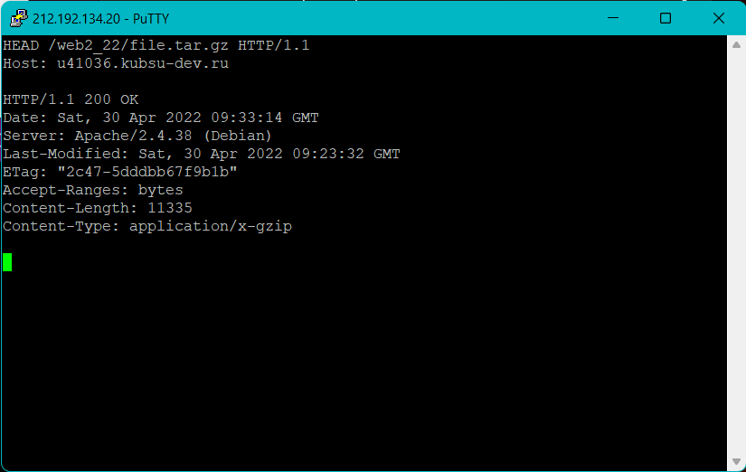

Загрузил файлы задания на сервер и сделал их доступным для чтения.
Подключаюсь через PuTTY, используя Raw по адресу 212.192.134.20 с портом 80.
Получаю главную страницу методом GET в протоколе HTTP 1.0. По умолчанию главная страница - это файл с названием index.
Получаю внутреннюю страницу методом GET в протоколе HTTP 1.1. По умолчанию возвращет файл с названием index. Сервер вернул файл index.php. Для HTTP 1.1 появился заголовок Host.
Чтобы получить информацию о файле (метаданные) использую метод HEAD, который не возвращает тело объекта. В данном случае нас интересует размер, смотрим на строчку Content-Length. Размер файла измеряется в байтах. В нашем случае размер файла file.tar.gz равен 11335 Байтам.
Медиа тип (так же известный как Internet Mail Extensions или MIME тип) является стандартом, который описывает природу и формат документа, файла или набора байтов. Аналогично предыдущему скриншоту, обращаюсь к файлу image.png В данном случае нас интересует медиатип, смотрим на строчку Content-Type. Медиатип ресурса: image/png
HTTP-метод POST предназначен для отправки данных на сервер. Тип тела запроса указывается в заголовке Content-Type. Запрос POST обычно отправляется через форму HTML и приводит к изменению на сервере. Веб-браузер отправляет POST-запрос с элементами веб-формы, по умолчанию интернет-тип данных медиа — application/x-www-form-urlencoded. В таком случае, значения кодируются в кортежах с ключом, разделённых символом '&', с '=' между ключом и значением. Пример с двумя значениями: say=Hi&to=Mom
Чтобы получить часть файла, использую заголовок Range. Заголовок позволяет запросить сразу несколько частей файла. Если сервер поддерживает отправку по частям, то код ответа будет: 206 Partial Content. Иначе, файл будет отправлен целиком с кодом 200. Заголовок ответа Accept-Ranges это маркер, который использует сервер, чтобы уведомить клиента о поддержке "запросов по кускам". Его значение указывает единицу измерения. Также браузер может попытаться возобновить прерванную загрузку, а не запускать её с самого начала.
Использую метод HEAD. В данном случае нас интересует кодировка, смотрим на строчку Content-Type, кодировка ресурса index.php: UTF-8.